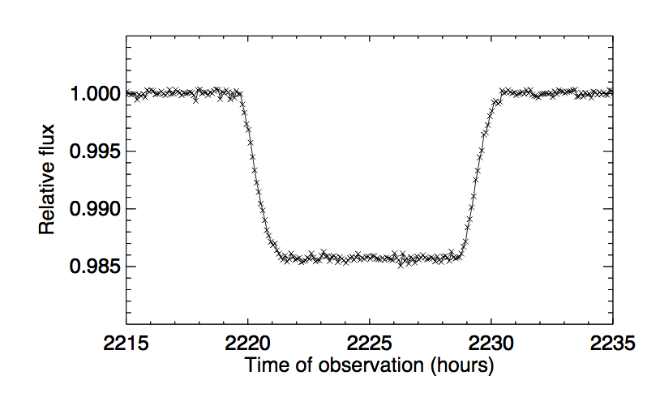

Forrige side🙂 🙁Formørkelser
Hvis vi ser formørkelser så vet vi at sin i = 1 og dermed vet vi massen: $$m_p=\left(\frac{P}{2\pi G}\right)^{1/3}m_*^{2/3}v_*$$ Men hvis i = 90∘, så får vi også en bonus. Vi kan nemlig i noen tilfeller finne radiusen til planeten ved å se på lyskurven ved formørkelsen.

På figuren ser vi en typisk lyskurve (den hopper opp og ned på grunn av støy). Vi ser hvordan lysstyrken synker og øker igjen når planetskiva går foran stjerneskiva. Lysstyrken er normalisert til 1 når det ikke er formørkelse.
Kan du tenke deg hvorfor kurven har denne formen? Neste side